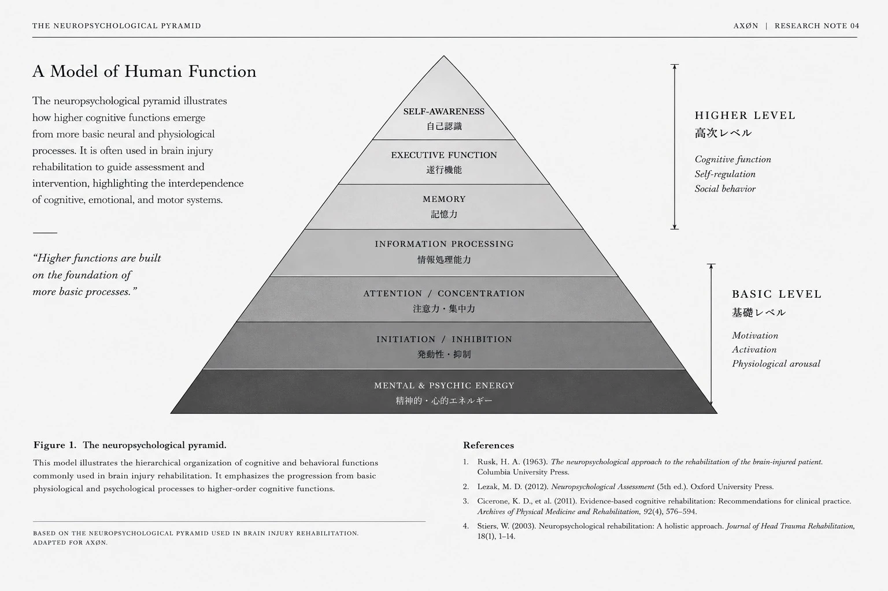

01｜CONNECTION
CONNECTION IS THE BEGINNING.
Every movement begins with a signal.
Nothing exists alone. 何ひとつ、単独では存在しない。
The body is a network of signals, sensations, memories, and responses.
What we see as movement is only the visible result of countless invisible connections.
02｜CONNECT
CONNECT.
What cannot be seen
can still shape us.
WHAT WE NOTICE SHAPES WHAT WE SEE.
Even in the same world, what we pay attention to changes what we take in.
BUT ATTENTION IS NOT ALWAYS CONSCIOUS.
Some things enter us before we consciously notice them. What we repeatedly see, hear, and experience can quietly shape the way we respond.
03｜REPEAT
REPEAT.
What we repeat becomes part of us.
3
WHY THREE?
1 is a beginning. 2 is a connection. 3 is what emerges.
THOUGHT SHAPES ACTION. 思考が、行動を形づくる。
ACTION SHAPES THOUGHT. 行動が、思考を形づくる。
90 / 10
MOST OF WHO WE BECOME IS SHAPED BY THE EVERYDAY.
90 — DAILY LIFE / DAILY ACTION
10 — WHAT WE ENCOUNTER
90 + 10 = 100
ALL OF IT SHAPES US.
And finally.
TO CHANGE THE WAY WE THINK, WE HAVE TO CHANGE THE WAY WE LIVE.
04｜ADAPT
ADAPT.
The body learns.
We change.
What happens when the body
has to find a new way?

THE NEUROPSYCHOLOGICAL PYRAMID
A model of human function.
BUT WHAT DOES IT MEAN TO US?
We are shaped by what we experience. What we notice. What we repeat. What we adapt to.
What we wear also shapes the experiences of our everyday lives.
05｜BECOME
BECOME.
We become
what we repeat.
06｜BRAND
And finally,
AXØn
Recovery × Identity.
Not just fashion.
1 A beginning.
2 A connection.
3 What emerges from them.
4 The structure that holds it.
5 The shift itself.
6 What remains — and what you wear.